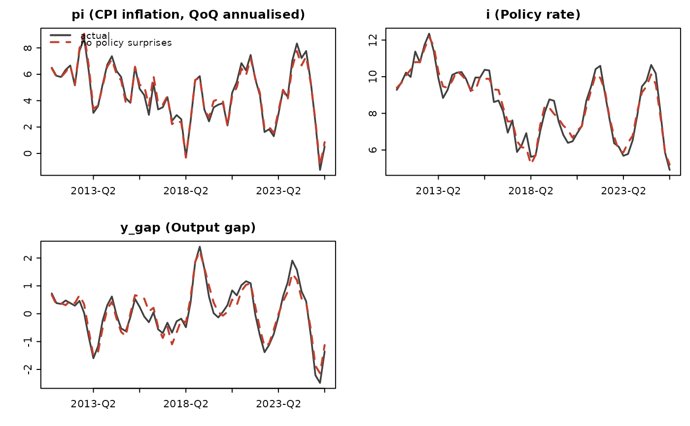

Rewrites history with some shocks switched off or scaled: "what if the central bank had simply followed its rule through 2022?" is the path implied by setting the policy shocks to zero over that window and re-running the model from the same starting point with all other shocks unchanged.
Usage
qpm_counterfactual(fit, shocks, periods = NULL, factor = 0, label = NULL)
# S3 method for class 'qpm_counterfactual'
plot(x, vars = NULL, ...)Arguments
- fit
A
qpm_filtration.- shocks
Shocks to modify.
- periods
Periods over which to modify them (labels as in the data, or integer indices). Default: the whole sample.
- factor
Multiplier applied to the selected shocks;
0(the default) switches them off entirely,0.5halves them.- label
Optional name for the scenario.
- x
A
qpm_counterfactual.- vars
Variables to plot.
- ...
Unused.
Value
An object of class qpm_counterfactual holding the actual and
counterfactual paths and their difference.
Details
This differs from qpm_decompose(), which attributes the history that
happened; here the history is replayed under a different assumption.
The counterfactual is only as good as the model's invariance to the
intervention — a Lucas-critique caveat that applies to every exercise
of this kind and is worth stating in any write-up.
Examples
sol <- qpm_solve(qpm_template("bkl"))
obs <- simulate(sol, nsim = 60, seed = 4, burn = 20)
obs$period <- next_quarters("2010-Q4", 60)
fit <- qpm_filter(sol, obs[, c("period", "pi", "i", "q")])
cf <- qpm_counterfactual(fit, shocks = "eps_i",
label = "no policy surprises")
cf
#> <qpm_counterfactual> no policy surprises
#> eps_i scaled by 0 over 60 periods (2011-Q1 ... 2025-Q4)
#> largest differences (counterfactual minus actual):
#> dy_obs +1.44 at 2018-Q1
#> r -1.37 at 2016-Q1
#> r_gap -1.37 at 2016-Q1
#> i -0.81 at 2018-Q1
#> pi +0.70 at 2016-Q2
#> q -0.69 at 2020-Q2
plot(cf, vars = c("pi", "i", "y_gap"))
